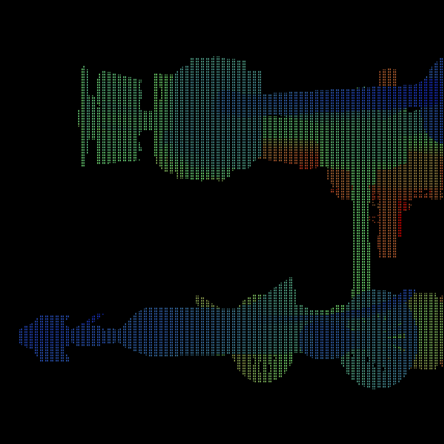
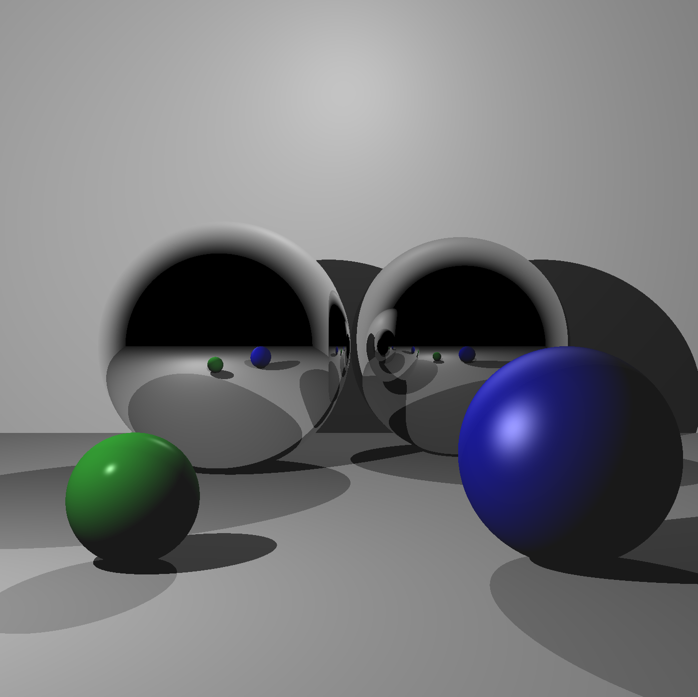
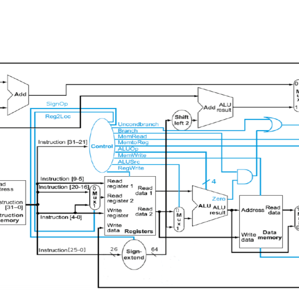

LiDAR View
During Fall 2019 I took part in the AggiE Challenge
Spacecraft. My contributions to the team consist of research done
about LiDAR technologies with a focus in noise simulation and a
code of a camera view that simulation.

Ray Tracer
Coded a Ray Tracing rendering implementation that supports a few
different geometries, Phong Shading Model with reflectionsand virtual
classes to easily add more geometries.

Single Cycle Processor
Implemented and tested a simple five stage arm v8 processor using Verilog,
the processor handled the basic required operations.